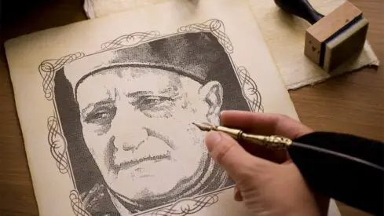
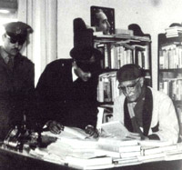
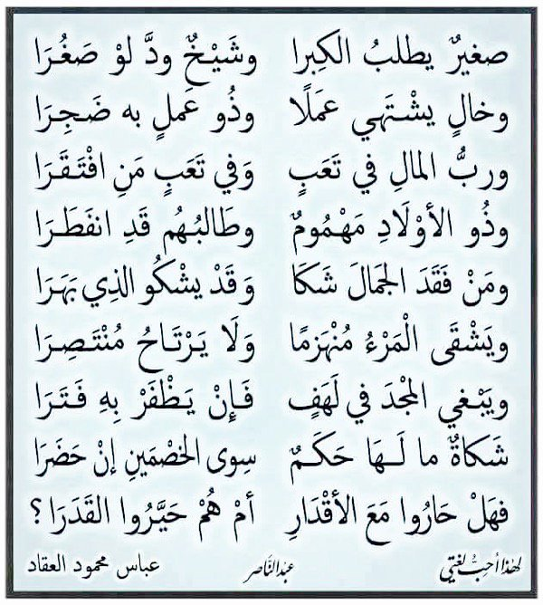
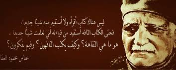

عباس محمود العقاد .. رحلة قلم
أديب وكاتب وسياسي ومؤرخ ومفكر مصري، عرف بالموسوعية ثقافة وتأليفا رغم أنه لم يتجاوز في التعليم النظامي مرحلة الابتدائية.كان أحد مؤسسي "مدرسة الديوان
" التي سعت لتجديد الشعر العربي
، وخاض معارك أدبية وفكرية مع خصومه، وسجن لمواقفه السياسية
. تجاوزت كتبه المائة وترجم بعضها
إلى لغات أجنبية.
المولد والنشأة
ولد عباس محمودإبراهيم مصطفى العقاد يوم 28 يونيو/حزيران 1889 في مدينة أسوان جنوبي
مصر لأسرة متدينة أصلها من دمياط. كان أجداده يمتنون صنعة الحرير فاكتسبوا لقب "العقاد"،
لكن والده كان موظفا بسيطا في إدارة المحفوظات. لم يتزوج العقاد قط، وكان محبا للموسيقى.
الدراسة والتكوين
حفظ القرآن الكريم بالكُتاب وأكمل الابتدائية 1903 بأسوان، ثم انقطعت دراسته النظام
ية لانعدام المدارس الحديثة بمنطقته وعجز أسرته عن تعليمه
في القاهرة، لكنه استطاع إتقان الإنجليزية بتعامله مع السياح الزائرين لم
دينته وألمّ بالفرنسية والألمانية، وهو ما أتاح له الاطلاع على الثقافة ا
لغربية، وحصل لاحقا على خبرة بالكهرباء بمدرسة الصنائع والفنون.
التوجه الفكري
رغم اطلاعه على الفكر الغربي فإنه ظل معتنقا للفكر الإسلامي، ومدافعا عن عقيدة الإسلام
وشريعته أمام خصومه، رافضا قصر الإسلام على الجانب الروحي.
الاشتغال بالصحافة
ضاق عباس محمود العقاد بحياة الوظيفة وقيودها، ولم يكن له أمل في الح
ياة غير صناعة القلم، وهذه الصناعة ميدانها الصحافة، فاتجه إليها، وكان أو
ل اتصاله بها في سنة (1325هـ= 1907م) حين عمل مع العلامة محمد فريد وجدي في جريدة الدس
تور اليومية التي كان يصدرها، وتحمل معه أعباءالتحرير والترجمة والتصحيح من العدد الأو
ل حتى العدد الأخير، فلم يكن معهما أحد يساعدهما في التحرير. وبعد توقف الجريدة عاد العقاد
سنة (1331هـ= 1912م) إلى الوظيفة بديوان الأوقاف، لكنه ضاق بها، فتركها، واشترك في تحرير جر
يدة المؤيد التي كان يصدرها الشيخ علي يوسف، وسرعان ما اصطدم بسياسة الجريدة، التي كانت تؤيد الخديوي عباس حلمي، فتركها وعمل بالتدريس فترة مع الكاتب

الكبير إبراهيم عبد القادر المازني، ثم عاد إلى الاشتغال بالصحافة في جريدة الأهالي سنة (1336هـ= 1917م)
وكانت تَصْدُر بالإسكندرية، ثم تركها وعمل بجريدة الأهرام سنة (1338هـ= 1919م) واشتغل بالحركة الوطني
ة التي اشتغلت بعد ثورة 1919م، وصار من كُتَّابها الكبار مدافعًا عن حقوق الوطن في الحرية والاستقلال
، وأصبح الكاتب الأول لحزب الوفد، المدافع عنه أمام خصومه من الأحزاب الأخرى، ودخل في معارك
مع منتقدي سعد زغلول زعيم الأمة حول سياسة المفاوضات مع الإنجليز بعد الثورة. وبعد فترة انتقل
للعمل مع عبد القادر حمزة سنة (1342هـ= 1923م) في جريدة البلاغ، وارتبط اسمه بتلك الجريدة، وملحقه
ا الأدبي الأسبوعي لسنوات طويلة، ولمع اسمه، وذاع صيته واُنْتخب عضوا بمجلس النواب، ولن يَنسى له التاريخ
وقفته الشجاعة حين أراد الملك فؤاد إسقاط عبارتين من الدستور، تنص إحداهما على أن الأمة مصدر السلطات،
والأخرى أن الوزارة مسئولة أمام البرلمان، فارتفع صوت العقاد من تحت قبة البرلمان على رؤوس الأشهاد من
أعضائه قائلا: “إن الأمة على استعداد لأن تسحق أكبر رأس في البلاد يخون الدستور ولا يصونه”، وقد كلفته هذه
الكلمة الشجاعة تسعة أشهر من السجن سنة (1349هـ= 1930م) بتهمة العيب في الذات الملكية. وظل عباس
محمود العقاد منتميًا لحزب الوفد حتى اصطدم بسياسته تحت زعامة مصطفى النحاس باشا في سنة ( 1354ه
ـ= 1935م) فانسحب من العمل السياسي، وبدأ نشاطُه الصحفي يقل بالتدريج وينتقل إلى مجال التأليف، وإن
كانت مساهماته بالمقالات لم تنقطع إلى الصحف، فشارك في تحرير صحف روزاليوسف، والهلال، وأخبار اليوم
، ومجلة الأزهر
تقدير العقاد
لقي العقاد تقديرا وحفاوة في حياته من مصر والعالم العربي، فاخْتير عضوًا في مجمع اللغة العربية ب
مصر سنة (1359هـ= 1940م) فهو من الرعيل الأول من أبناء المجمع، واخْتير عضوًا مراسلا في مجمع اللغة العرب
ية بدمشق، ونظيره في العراق، وحصل على جائزة الدولة التقديرية في الآداب سنة (1379هـ= 1959م). وتُرجمت
بعض كتبه إلى اللغات الأخرى، فتُرجم كتابه المعروف “الله” إلى الفارسية، ونُقلت عبقرية محمد وعبقرية الإمام ع
لي، وأبو الشهداء إلى الفارسية، والأردية، والملاوية، كما تُرجمت بعض كتبه إلى الألمانية والفرنسية والروس
ية. وكان أدب العقاد وفكره ميدانًا لأطروحات جامعية تناولته شاعرًا وناقدًا ومؤرخًا وكاتبًا، وأطلقت كلية الل
غة العربية بالأزهر اسمه على إحدى قاعات محاضراتها، وبايعه طه حسين بإمارة الشعر بعد موت شوقي، وحافظ إبر
اهيم، قائلا: “ضعوا لواء الشعر في يد العقاد، وقولوا للأدباء والشعراء أسرعوا واستظلوا بهذا اللواء، فقد ر
فعه لكم صاحبه”. وقد أصدرت دار الكتب نشرة بيلوجرافية وافية عن مؤلفات العقاد، وأصدر الدكتور حمدي السكو
ت أستاذ الأدب العربي بالجامعة الأمريكية كتابًا شاملا عن العقاد، اشتمل على بيلوجرافية لكل إنتاج العقاد الأ
دبي والفكري، ولا تخلو دراسة عن الأدب العربي الحديث عن تناول كتاباته الشعرية والنثرية. واشْتُهر العقاد بص
الونه الأدبي الذي كان يعقد في صباح كل جمعة، يؤمه تلامذته ومحبوه، يلتقون حول أساتذتهم، ويعرضون لمسائل م
ن العلم والأدب والتاريخ دون الإعداد لها أو ترتيب، وإنما كانت تُطْرح بينهم ويُدلي كل منهم بدلوه، وعن هذه ا
لجلسات الشهيرة أخرج الأستاذ أنيس منصور كتابه البديع ” في صالون العقاد”.
إسلاميات العقاد
تجاوزت مؤلفات العقاد الإسلامية أربعين كتابًا، شملت جوانب مختلفة من الثقافة الإسلامية، فتناول أعلام الإسل
ام في كتب ذائعة، عرف كثير منها باسم العبقريات، استهلها بعبقرية محمد، ثم توالت باقي السلسلة التي ضمت عبقرية
الصديق، وعبقرية عمر، وعبقرية علي، وعبقرية خالد، وداعي السماء بلال، وذو النورين عثمان، والصديقة بنت الصديق، وأ
بو الشهداء وعمرو بن العاص، ومعاوية بن أبي سفيان، وفاطمة الزهراء والفاطميون. وهو في هذه الكتب لا يهتم بسرد الحو
ادث، وترتيب الوقائع، وإنما يعني برسم صورة للشخصية تُعرِّفنا به، وتجلو لنا خلائقه وبواعث أعماله، مثلما تجلو الصورة ملا
مح من تراه بالعين. وقد ذاعت عبقرياته واُشتهرت بين الناس، وكان بعضها موضوع دراسة الطلاب في المدارس الثانوية في مصر، وحظ
يت من التقدير والاحتفاء بما لم تحظ به كتب العقاد الأخرى. وألَّف العقاد في مجال الدفاع عن الإسلام عدة كتب، يأتي في مقدمتها:
حقائق الإسلام وأباطيل خصومه، والفلسفة القرآنية، والتفكير فريضة إسلامية، ومطلع النور، والديمقراطية في الإسلام، والإنسان في الق
رآن الكريم، والإسلام في القرن العشرين وما يقال عن الإسلام. وهو في هذه الكتب يدافع عن الإسلام أمام الشبهات التي يرميه بها خصومه
وأعداؤه، مستخدمًا علمه الواسع وقدرته على المحاجاة والجدل، وإفحام الخصوم بالمنطق السديد، فوازن بين الإسلام وغيره وانتهى م
ن الموازنة إلى شمول حقائق الإسلام وخلوص عبادته وشعائره من شوائب الملل الغابرة حين حُرِّفت عن مسارها الصحيح، وعرض للنبوة ف
ي القديم والحديث، وخلص إلى أن النبوة في الإسلام كانت كمال النبوات، وختام الرسالات وهو يهاجم الذين يدعون أن الإسلام يدعو إ
لى الانقياد والتسليم دون تفكير وتأمل، ويقدم ما يؤكد على أن التفكير فريضة إسلامية، وأن مزية القرآن الأولى هي التنويه بال
عقل وإعماله، ويكثر من النصوص القرآنية التي تؤيد ذلك، ليصل إلى أن العقل الذي يخاطبه الإسلام هو العقل الذي يعصم الضمير وي
درك الحقائق ويميز بين الأشياء. وقد رد العقاد في بعض هذه الكتب ما يثيره أعداء الإسلام من شبهات ظالمة يحاولون ترويجها بشتى
الوسائل، مثل انتشار الإسلام بالسيف، وتحبيذ الإسلام للرق، وقد فنَّد الكاتب هذه التهم بالحجج المقنعة والأدلة القاطعة في كتابه “
ما يقال عن الإسلام”.
التجربة الأدبية
اكتسب العقاد بجهده الذاتي ثقافة موسوعية، فتعمق بمطالعاته في شتى المعارف الإنسانية
وتناول بقلمه السيال شـُعبها المختلفة، مد
افعا عن وطنه ودينه، كما دعا للحرية والديمقراطية مهاجما الماركسية والنازية.
أسس بالتعاون مع إبراهيم المازني "مدرسة الديوان" التي دعت لتجديد الشع
ر العربي، ونظم صالونا أدبيا في بيته يجتمع فيه -صباح الجمعة- الأدباء والمفكرون.
خاض مساجلات أدبية وسياسية كثيرة كان أشهرها مع مصطفى الرافعي وطه حسين
وزكي مبارك، وأصدر مع المازني كتابا ينتقد أحمد شوقي.
اقتحم العقاد حلبة السياسة متقلبا في ولاءاتها المتناقضة، فانضم بعد ثورة
1919 إلى حزب "الوفد" وأصبح كاتبه الشارح لمواقفه السياسية والمنافح عنها،
ثم تمرد عليه 1935 فهاجمه وانتقده بشدة.
دخل معركة حامية مع الملك فؤاد وانتقده بحدة داخل البرلمان فحُوكم 1930 بتهمة
"عيب الذات الملكية" وسجن تسعة أشهر، لكنه أيد الملك فاروق بعد مغادرته "الوفد".
من أقواله: "من السوابق التي أغتبط بها وأحمد الله عليها أنني كنت -فيما أرجح- أو
ل موظف مصري استقال من وظيفة حكومية بمحض اختياره، يوم كانت الاستقالة من الوظيف
ة والانتحار في طبقة واحدة من الغرابة وخطل الرأي عند الأكثرين..، (لكنني) كنت أؤ
من كل الإيمان بأن الموظف رقيق القرن العشرين".
المؤلفات
جاوزت كتبه المائة، ونشر آلاف المقالات الصحفية طبعت بعضها "الهيئة المصرية العامة للكتاب" في مجلدين كبيرين، وأصدر تسعة دواوين سنوات 1916-1950.
من مؤلفاته: أول كتبه "الخلاصة اليومية" 1912، و"ساعات ب
ين الكتب" 1914، و"الفلسفة القرآنية"، و"حقائق الإسلام وأباطيل خصومه"، و"أثر العر
ب في الحضارة الأوروبية"، و"المرأة في القرآن"، و"اللغة الشاعرة"، و"التفكير فريض
ة إسلامية" 1962، وسلسلة العبقريات. وقد ترجم بعض كتبه إلى لغات أجنبية.
شاعرية العقاد
لم يكن عباس محمود العقاد كاتبًا فذا وباحثًا دؤوبًا ومفكرًا عميقًا، ومؤرخًا دقيقًا فحسب،
بل كان شاعرًا مجددًا، له عشرة دواوين، هي: يقظة الصباح، ووهج الظهيرة، وأشباح الأصيل، وأعاص
ير مغرب، وبعد الأعاصير، وأشجان الليل، ووحي الأربعين، وهدية الكروان، وعابر سبيل، وديوان م
ن دواوين، وهذه الدواوين العشرة هي ثمرة ما يزيد على خمسين عامًا من التجربة الشعرية. ومن
أطرف دواوين العقاد ديوانه “عابر سبيل” أراد به أن يبتدع طريقة في الشعر العربي، ولا يجعل ا
لشعر مقصورًا على غرض دون غرض، فأمور الحياة كلها تصلح موضوعًا للشعر؛ ولذا جعل هذا الديوان بم
وضوعات مستمدة من الحياة، ومن الموضوعات التي ضمها الديوان قصيدة عن “عسكري المرور” جاء فيها: م
تحكم في الراكبـــين وما لــــه أبدًا ركوبة لهم المثوبة من بنــانك حين تأمر والعقـــوبة مُر ما
بدا لك في الطـريق ورض على مهل شعوبه أنا ثائر أبدًا وما فـــي ثورتي أبدًا صعـــوبة أنا راكب رجل
ي فـــلا أمْرٌ عليَّ ولا ضريبة تقدير العقاد لقي العقاد تقديرا وحفاوة في حياته من مصر والعالم العربي،
فاخْتير عضوًا في مجمع اللغة العربية بمصر سنة (1359هـ= 1940م) فهو من الرعيل الأول من أبناء المجمع،
واخْتير عضوًا مراسلا في مجمع اللغة العربية بدمشق، ونظيره في العراق، وحصل على جائزة الدولة التقدي
رية في الآداب سنة (1379هـ= 1959م). وتُرجمت بعض كتبه إلى اللغات الأخرى، فتُرجم كتابه المعروف “الله” إلى
الفارسية، ونُقلت عبقرية محمد وعبقرية الإمام علي، وأبو الشهداء إلى الفارسية، والأردية، والملاوية، كما
تُرجمت بعض كتبه إلى الألمانية والفرنسية والروسية. وكان أدب العقاد وفكره ميدانًا لأطروحات جامعية تناو
لته شاعرًا وناقدًا ومؤرخًا وكاتبًا، وأطلقت كلية اللغة العربية بالأزهر اسمه على إحدى قاعات محاضراتها، وبايع
ه طه حسين بإمارة الشعر بعد موت شوقي، وحافظ إبراهيم، قائلا: “ضعوا لواء الشعر في يد العقاد، وقولوا ل
لأدباء والشعراء أسرعوا واستظلوا بهذا اللواء، فقد رفعه لكم صاحبه”. وقد أصدرت دار الكتب نشرة بيلوجرافية
وافية عن مؤلفات العقاد، وأصدر الدكتور حمدي السكوت أستاذ الأدب العربي بالجامعة الأمريكية كتابًا شاملا عن العق
اد، اشتمل على بيلوجرافية لكل إنتاج العقاد الأدبي والفكري، ولا تخلو دراسة عن الأدب العربي الحديث عن تناول
كتاباته الشعرية والنثرية. واشْتُهر العقاد بصالونه الأدبي الذي كان يعقد في صباح كل جمعة، يؤمه تلامذته ومحبوه
، يلتقون حول أساتذتهم، ويعرضون لمسائل من العلم والأدب والتاريخ دون الإعداد لها أو ترتيب، وإنما كانت تُطْرح بين
هم ويُدلي كل منهم بدلوه، وعن هذه الجلسات الشهيرة أخرج الأستاذ أنيس منصور كتابه البديع ” في صالون العقاد”.

الجوائز
منحته الرئاسة المصرية جائزة الدولة التقديرية في الآداب، كما أعطته جامعة القاهرة
دكتوراه فخرية لكنه رفضها.
كرمته محافظته "أسوان" فأقامت له متحفا خاصا يضم مقتنياته الشخصية من ملابس وكتب وصور و
مخطوطات بخط يده، وخلدت كلية اللغة العربية في الأزهر اسمه بإطلاقه على إحدى قاعات محاضرات
ها, كما سمي به أحد الشوارع الكبيرة بالقاهرة. وُثقت حياته في مسلسل أنتج 1979 بعنوان "العملاق".
عقدت دار الكتب المصرية 2014 مؤتمرا تحت عنوان "العقاد.. عبقرية متجددة" لذكرى رحيله الخ
مسين، كما أحيتها "المجلة العربية" بنشرها ملفا عنه تجاوزت صفحاته 60 صفحة.

الوفاة
ظل عباس محمود العقادد عظيم الإنتاج، لا يمر عام دون أن يسهم فيه بكتاب أو عدة كتب، حتى تجاوزت كتُبُه
مائةَ كتاب، بالإضافة إلى مقالاته العديدة التي تبلغ الآلاف في بطون الصحف والدوريات، ووقف حيات
ه كلها على خدمة الفكر الأدبي حتى لقي الله في (26 من شوال 1383هـ= 12 من مارس 1964م).
شكرا لك